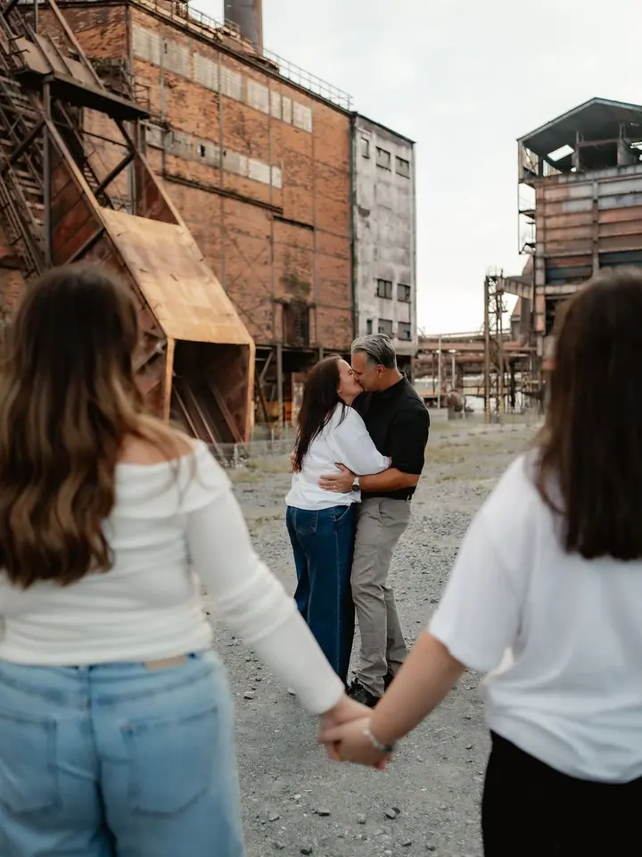
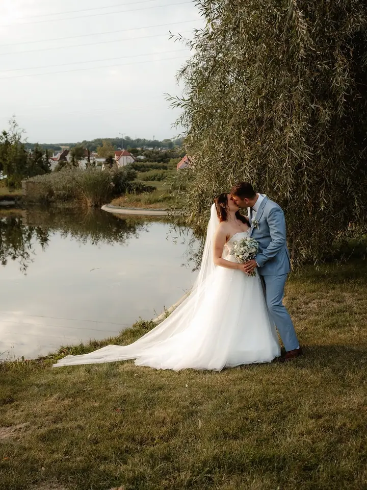
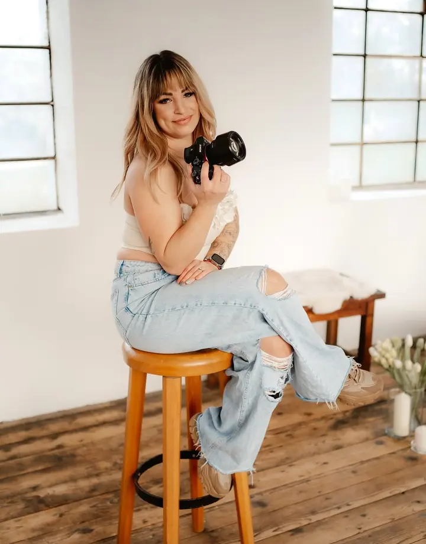

Rodinné a dětské focení
Jednou za čas je potřeba pořádná fotka, kde jste prostě všichni. Budeme přirození, užijeme si to a děti budou mít celý večer o čem povídat.

Jmenuji se Sabina Musialková, ale klidně mi říkejte Sabča. Jsem rodinná, portrétní a svatební fotografka z Ostravy a fotím hlavně lifestyle, tedy v přirozených pózách a …
Rezervovat termínFotit jsem začala v roce 2010 a od roku 2016 je fotografování i mou prací. Musím ale říct, že to není jen práce. Je to životní styl, díky kterému poznávám spoustu úžasných lidí a prožívám s vámi krásné momenty.


Ráda pracuji s přirozeným světlem a poslední dobou se zaměřuji hlavně na lifestyle focení. Už to není jen o koukání do foťáku, ale o tom zachytit vaše emoce, smích a radost. Fotky upravuji do svého stylu, tedy kontrast, jas a barvy, ale velké retuše ani zeštíhlování nedělám.
V Moravské Ostravě na ulici Sládková, kousek za Futurem, mám svůj ateliér. Je laděný do lehkého boho stylu a během roku se proměňuje podle tématu, třeba na Vánoce nebo Velikonoce. Na těhotenské focení si u mě můžete půjčit i šaty.
Co fotím
Jednou za čas je potřeba pořádná fotka, kde jste prostě všichni. Budeme přirození, užijeme si to a děti budou mít celý večer o čem povídat.
Každý svatební den je originál a já se na něm snažím zachytit emoce, štěstí a radost, které k němu patří. Fotím 10 až 12 hodin, až do prvního novomanželského tance.
Bříško fotím nejčastěji v 7. až 8. měsíci a v ateliéru si můžete půjčit šaty. Miminka pak fotím lifestyle u vás doma, hlavně ve vaší náruči.
Nebaví vás selfie? Vyrazíme do lesa, parku nebo do industriální zóny Vítkovic, vy se uvolníte a já vás budu fotit.
Postup
Napíšete mi a společně vybereme termín a místo. Nejraději fotím v podvečer ve zlaté hodince a vítám i zatažené počasí, přímému polednímu slunci se vyhýbám.
Vezměte si něco, v čem se budete cítit dobře, ideálně jednobarevné oblečení bez nápisů. Modré džíny a bílá trička to vždycky jistí a klidně s sebou přibalte deku nebo domácího mazlíčka.
Focení trvá zhruba hodinku a během něj měníme místo, třeba louku, les a rybníky. Uděláme pár fotek do foťáku, ale hlavně spoustu přirozených momentek.
Do týdne vám pošlu odkaz na náhledy, ze kterých si vyberete fotky k úpravě. Hotové fotografie dostanete v elektronické podobě nejpozději do 4 týdnů.
Otázky
Mini focení (půl hodiny, 8 upravených fotek) stojí 1 200 Kč v exteriéru nebo 1 600 Kč v ateliéru. Hodinové focení s 20 upravenými fotkami vyjde na 1 800 Kč nebo 2 200 Kč, větší balíček s 35 až 40 fotkami na 2 500 Kč nebo 3 000 Kč. Svatba stojí 18 000 Kč.
Fotím 10 až 12 hodin, do prvního novomanželského tance, a dostanete 500 až 800 upravených fotografií, dřevěnou krabičku s flash diskem a 30 fotek v tisku. Když zůstanu i na zábavu a prskavky, je to za příplatek 2 000 Kč.
Bříško fotím nejčastěji v 7. měsíci, vezměte si s sebou ultrazvuk nebo botičky pro miminko. Newborn fotím u vás doma mezi 7. a 14. dnem věku, proto doporučuji objednat se už v těhotenství.
Ano, doprava mimo Ostravu se účtuje 10 Kč za kilometr. Nejčastěji fotím u rybníků pod Bedřiškou, ve Vítkovicích nebo v Bělském lese, ale domluvit se můžeme i na jiném místě.